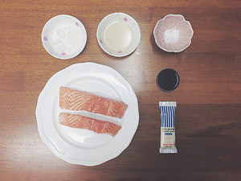
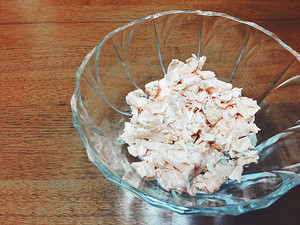
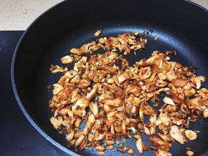

虽然相对于日版的深夜食堂，国内版的剧情对我的吸引力稍差，然而对剧中美食的兴趣却极为浓厚，一直想要把喜爱的几道都尝试一下，鱼松饭是我一下就相中的，尝试做了一下感觉味道真的还不错，尤其对于不太可以接受生三文鱼的小伙伴来说，这个是吃三文鱼一种不错的方式，所以忍不住写出来和大家一起分享~~期待大家的作品哦~~
用料
三文鱼，200克食用油， 1大勺
冰糖，5克
生抽， 1.5小勺
盐，适量
海苔， 适量
沙拉酱， 适量
步骤
1,准备好所有需要的食材，开大火用蒸锅将三文鱼蒸熟。

2,把蒸煮的三文鱼撕成碎块代用。

3, 不粘锅内加入食用油烧热后，放入冰糖炒变色后加入三文鱼碎，小火翻炒至鱼肉颜色微微变黄后加入生抽、盐，再继续不断翻炒至鱼肉失去水分变成焦糖色。

4, 最后，把温热的鱼松放在煮好的米饭上，再依据口味加入适量的沙拉酱，撒上一些海苔碎，就可以享用啦~